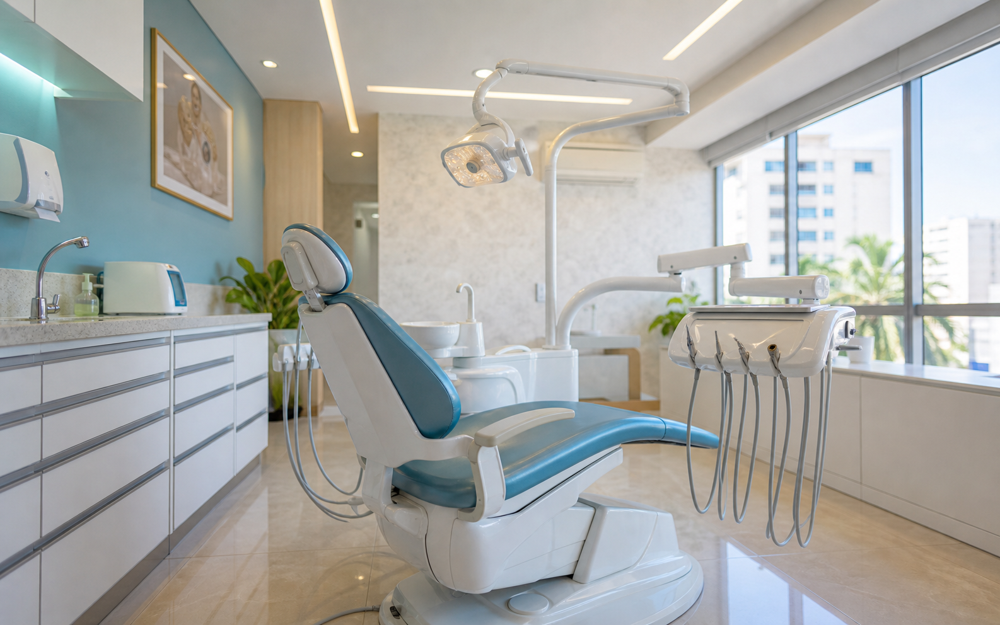

Implantes e próteses
Um bloco direto para quem busca reabilitação oral e quer entender o primeiro passo de contato.
Odontologia em Vitória
Conceito de site para organizar áreas de atendimento, localização geral e contato da COI Odontologia em um caminho simples para agendamento.

A proposta deste demo é fazer o visitante entender em poucos segundos o que a clínica atende e como iniciar uma conversa. Sem depender de feed, diretório ou link solto.
Áreas divulgadas publicamente
As áreas abaixo aparecem em fonte pública. O texto final deve ser confirmado pela clínica antes de publicação oficial.
Um bloco direto para quem busca reabilitação oral e quer entender o primeiro passo de contato.
Organização de áreas técnicas sem prometer resultado nem substituir avaliação profissional.
Texto contido, com foco em agendar conversa e evitar promessa de resultado visual.
Como marcar
A pessoa lê as áreas de atendimento sem sair da página.
Clica no WhatsApp com uma mensagem pronta para iniciar a conversa.
A clínica confirma detalhes, horário e endereço correto pelo canal oficial.
Contato público
A fonte pública consultada cita Praia do Suá, Vitória/ES, telefone celular e Instagram. Como há dados adicionais na mesma página, o endereço completo deve ser confirmado pela clínica.
Praia do Suá, Vitória/ES
Instagram citado: @coiodontovix
Abrir WhatsAppAntes de enviar
Não. É um conceito visual criado com informações públicas para mostrar uma possibilidade de presença própria.
Não. Elas foram extraídas de fonte pública, mas precisam ser confirmadas pela clínica antes da publicação oficial.
Porque fotos de equipe, pacientes ou artes autorais exigem autorização. O demo usa uma imagem genérica sem pessoas.